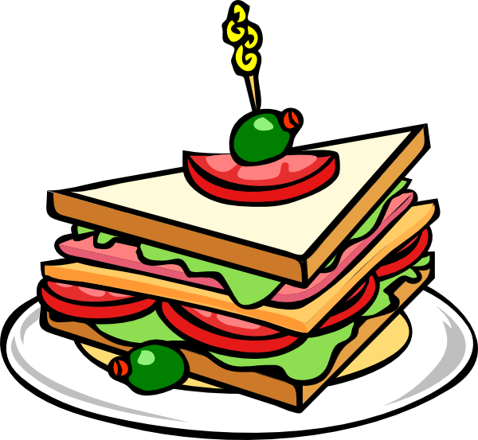

Sains Santap: menjelajahi keajaiban teknologi pangan
Apa saja hal-hal menarik yang bisa ditemui di teknologi pangan?
Tentunya, berbicara tentang teknologi pangan, banyak hal menarik yang dapat ditemukan dalam bidang ini.
Beberapa aspek menarik yang telah saya temui di teknologi pangan antara lain kemampuan untuk menciptakan produk makanan yang unik serta peluang besar untuk berinovasi.
Mengapa Teknologi Pangan Penting?
Teknologi pangan adalah bidang yang tak terpisahkan dari kehidupan kita sehari-hari. Ini adalah ilmu dan praktik yang memungkinkan kita untuk menciptakan makanan yang lebih baik, lebih aman, dan lebih lezat.
Inovasi Makanan
Teknologi pangan memungkinkan kita menciptakan makanan baru yang nikmat dan sehat. Contoh seperti makanan organik, makanan fungsional.

Keamanan Pangan
Dalam dunia yang semakin kompleks, kita harus memastikan makanan yang kita konsumsi aman. Teknologi pangan membantu dalam pengujian dan pengawetan makanan.
Pangan Berkelanjutan
Dengan populasi dunia yang terus tumbuh, teknologi pangan membantu kita menghasilkan makanan secara berkelanjutan dan mengurangi dampak lingkungan.
Di gedung baru FPP Undip terdapat kafe di lantai 4 yang dikelola oleh Teknologi Pangan. Di kafe ini, Anda dapat menikmati berbagai jenis kopi, dan jika Anda tertarik untuk magang, Anda juga bisa melakukannya. Selain itu, Tekpang Undip juga memiliki produksi susu dan bakery yang diolah sendiri. Saya merasa hal ini sangat menarik, karena kita memiliki kesempatan untuk membuat produk kita sendiri. Dengan memilih jurusan Teknologi Pangan, kita dapat mengeluarkan kreativitas dan berinovasi dalam bidang makanan, serta memiliki peluang karir yang luas.